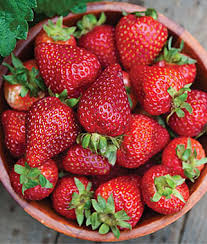

STRAWBERRY
strawberry.
A strawberry is both a low-growing, flowering plant and also the name of the
fruit that it produces. Strawberries are soft, sweet, bright red berries.
They're also delicious. Strawberries have tiny edible seeds, which grow all over
their surface